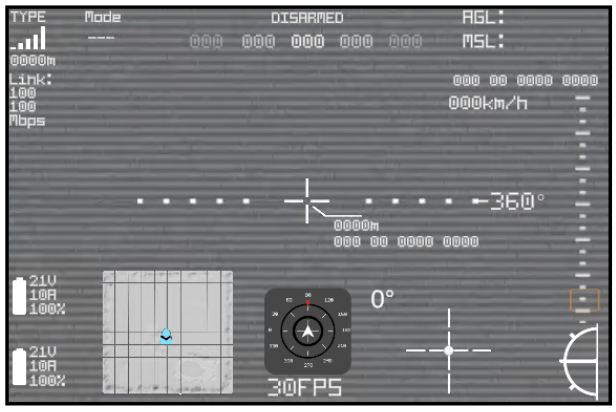
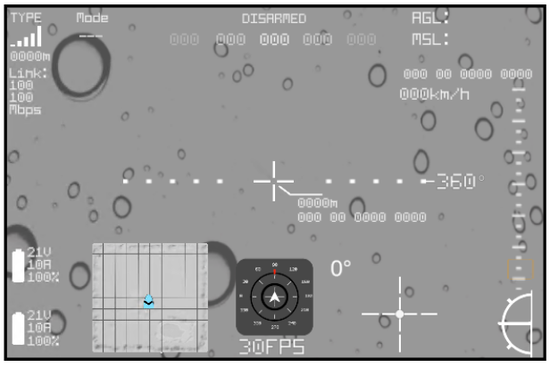
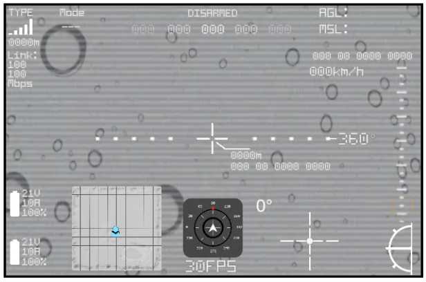
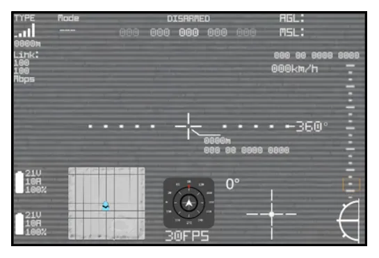
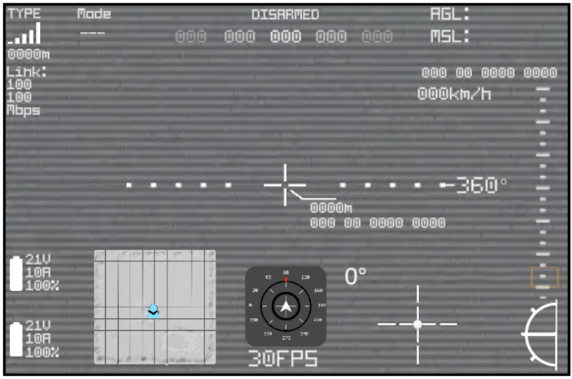
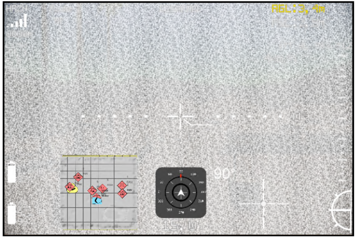
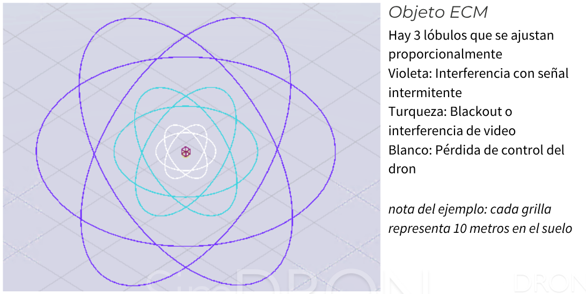
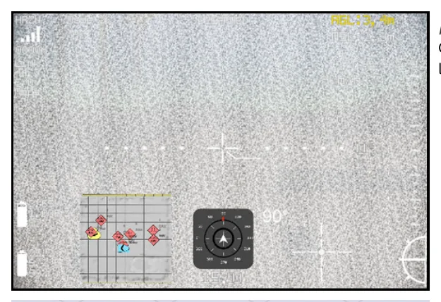

Capas de superposición, VTx y ECM
Guía de consulta basada en el manual original. Las páginas del PDF se abren en otra pestaña y las capturas pueden consultarse sin perder tu lugar.
PÁGINA 106 Capas de superposición



Ver recorte anterior de la página (referencia)

Capas de superposición
Estas capas se agregan delante de la transmisión de la cámara en el OSD del controlador del dron Son efectos de video que agregan condicionantes a la situación visual ideal que sería el renderizado en limpio de la imagen de la cámara que porta el dron
Analogic VTx
Representa la transmisión tipo analógica que utilizan muchos drones FPV (al menos hasta la masificación de la Fibra Óptica). Además genera el efecto de ECM
Drops
Representa las gotas de lluvia y empañamiento. Útil cuando se configura en el sistema de ambiente condiciones desfavorables como lluvia.
Combined
Ambas capas se superponen, por un lado la imagen tiene más ruido horizontal por el VTx y vertical por la caída de gotas dificultando seriamente la visibilidad.
PÁGINA 107 Capas de superposición



Ver recorte anterior de la página (referencia)

Capas de superposición
La capa de Analogic TV Filter agrega también la posibilidad de interferencia mediante ECM (Electronic Counter Measures o Contramedidas Electrónicas) Anlg VTx Se superpone el sincronismo de líneas de TV y ruido
nota: esta capa no afecta a la visualización de la información del OSD
Interference Cuando el dorn entra en el lóbulo de un ECM )
Objeto ECM
Hay 3 lóbulos que se ajustan proporcionalmente Violeta: Interferencia con señal intermitente Turqueza: Blackout o interferencia de video Blanco: Pérdida de control del dron nota del ejemplo: cada grilla representa 10 metros en el suelo